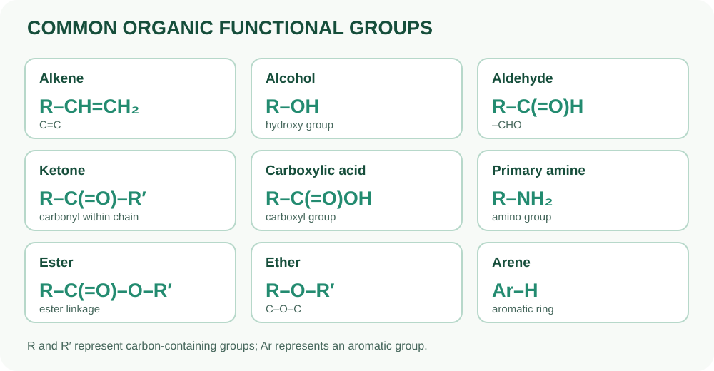

Алканы
Только одинарные связи C–C; пример — этан.
ЧАСТЬ III · ГЛАВА 11
Органическая химия изучает большинство соединений углерода; простые оксиды углерода, карбонаты и некоторые другие классы обычно относят к неорганическим веществам. Разнообразие органических соединений связано со способностью атомов углерода образовывать прочные ковалентные связи и цепи.
Алканы — насыщенные ациклические углеводороды с общей формулой CₙH₂ₙ₊₂.
| Название | Формула | Число атомов C |
|---|---|---|
| Метан | CH₄ | 1 |
| Этан | C₂H₆ | 2 |
| Пропан | C₃H₈ | 3 |
| Бутан | C₄H₁₀ | 4 |

Только одинарные связи C–C; пример — этан.
Содержат двойную связь C=C; пример — этен.
Гидроксильная группа –OH связана с насыщенным атомом углерода; пример — этанол.
Содержат карбоксильную группу –COOH; пример — этановая (уксусная) кислота.
Содержат альдегидную группу –CHO; пример — этаналь.
Производные аммиака, в которых один или несколько атомов водорода заменены углеводородными группами; пример — метиламин.
Содержат карбонильную группу внутри углеродной цепи; пример — пропанон (ацетон).
Содержат группу R–COO–R′; многие имеют характерные запахи. Пример — этил этаноат.
Атом кислорода соединяет две углеводородные группы; пример — диэтиловый эфир.
Ароматические соединения с делокализованной π-системой; простейший пример — бензол C₆H₆.
Введите число атомов углерода в алкане (от 1 до 20).